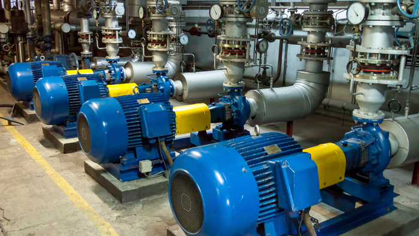
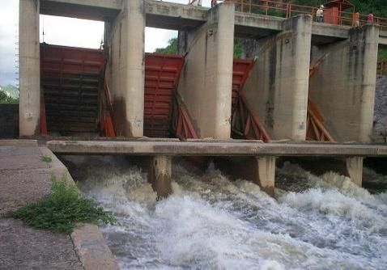
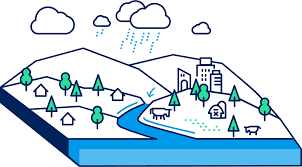
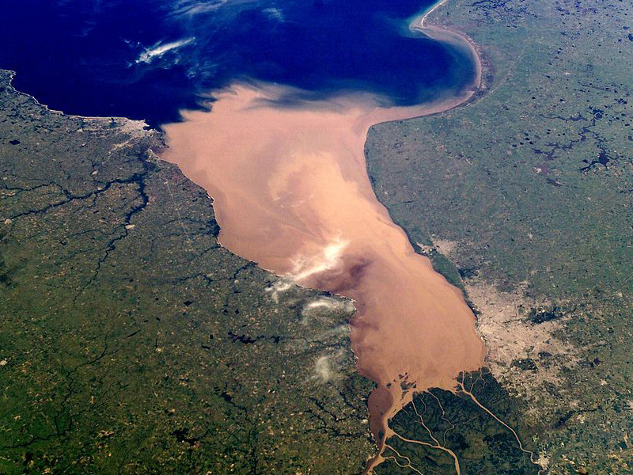

Servicios de Ingeniería Hidráulica
Anteproyectos y proyectos ejecutivos de Ingeniería Hidráulica
Plasmamos en detalle distintas soluciones a problemas relativos al saneamiento, abastecimiento y manejo de los recursos hídricos.
- Redes de Agua Potable y Cloacas
- Desagües Pluviales e hidráulica urbana
- Diseño de plantas potabilizadoras y de tratamiento
- Estudio de Cuencas
- Control de inundaciones



